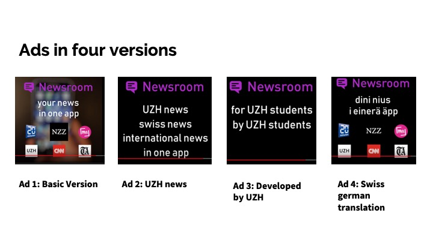
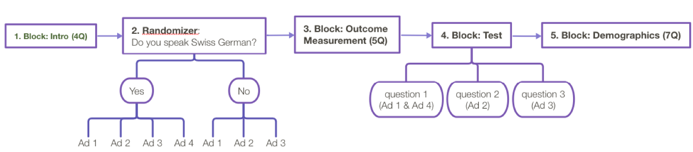
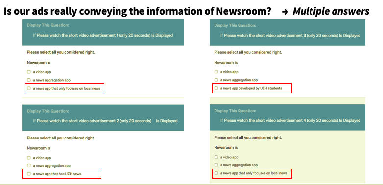
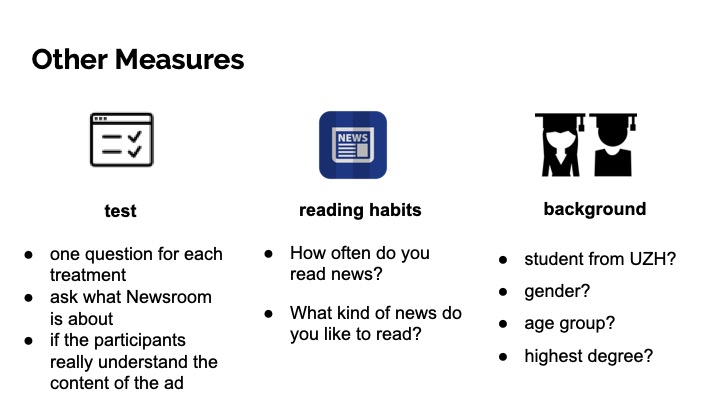

Newsroom is a news aggregation app developed by students from the University of Zurich and includes UZH News.
Based on the uniquessness, we selected our target audience as UZH students and designed four versions of advertisements.

The hypotheses are:
H1: UZH students who read news would be attracted by ads that reveal the Newsroom app is made at UZH.
H2: Swiss German speakers would like Swiss German ad more than English one even if they speak English.
We did a lab experiment with these four versions of ad, testing our hypotheses and selecting the two ads with best performance for the field experiment.
We set up an online survey with one version of advertisements displayed randomly.
The survey flow consists of five main parts:

In the first block, we set up the introduction of the survey and tracked the participant’s time spent on the page and browser information. The only question that the participant needs to choose is to ask if the participant speaks Swiss German.
Different answers to this question lead them to different branches of randomizer. If the answer is “yes”, they have the possibility to watch any ad of four versions, while the answer is “No”, they have a chance to watch one out of the first three versions except for the Swiss German version since we assumed they wouldn’t be able to understand it. In both branches, the possibility of presenting is even.
After watching the advertisement, we ask the participants to evaluate it by answering the questions in the third block.
Besides the outcome variables, we designed one question for each treatment in the fourth block to ask what Newsroom is about, in order to test if the participants really understand the content of the advertisement. They are multiple-answer-questions.

In the last block, we ask about their background and attitude to reading news, so as to figure out if the demographic factors and reading habits influence the preference for the advertisement.
To confirm that most participants match our target audience, we set up several questions to get to know their academic background and personal information.

In two days of surveying term, we received 121 responses in total, and we chose 111 valid responses according to the demographic criteria as the sample size to carry out the data analysis. Among them are 57 Swiss and 54 Non-Swiss, while 68 people are from UZH and 43 people are not students at UZH.
We selected the basic English version and Swiss German version as the two ads that we will compare against each other in the field experiment.
Ad 1. English version
Ad 2. Swiss German version
We targeted people in Switzerland on Instagram that were interested in at least three different newspapers. We assumed that the more newspapers a person reads, the higher the need for a news aggregation app would be.
Even though one of the ads was in English, we only used German as the main language. We neglected English as an option, since the number of people with English as their main language in our target group was less than five percent. We didn’t restrict the age, because we assumed that everyone who is using Instagram is tech-savvy enough to download the Newsroom app.
We reached 59’000 people for our experiment.
In line with the results from the lab experiment, we confirmed the attractiveness of the Swiss German ad compared to the English version.
The cost per click for the ad in Swiss German is 2.63 CHF, whereas the cost per click for the ad in English is 5.54 CHF. Even though there were more than double as many clicks on the Swiss German Ad, the results were not significant.
Nowadays, online ads are often displayed in languages according to locations. Audience’s native languages are often ignored in online ads.
As an insight gained from the marketing experiments, online ads can be shown in a language based on audience’s web-page language instead of location. In this way, the valid impressions of online ads would increase, thus the cost per outcome would decrease.